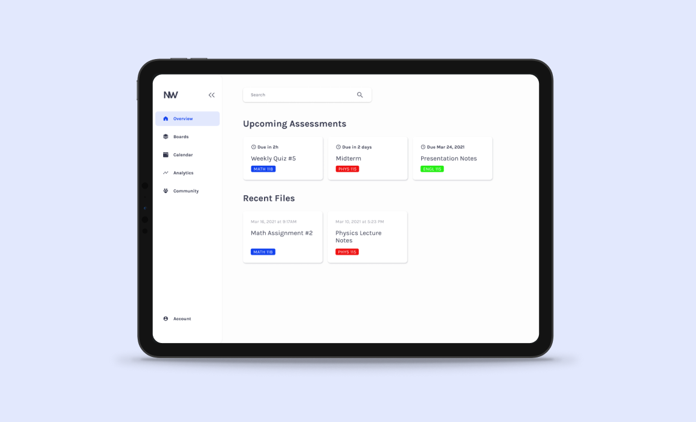
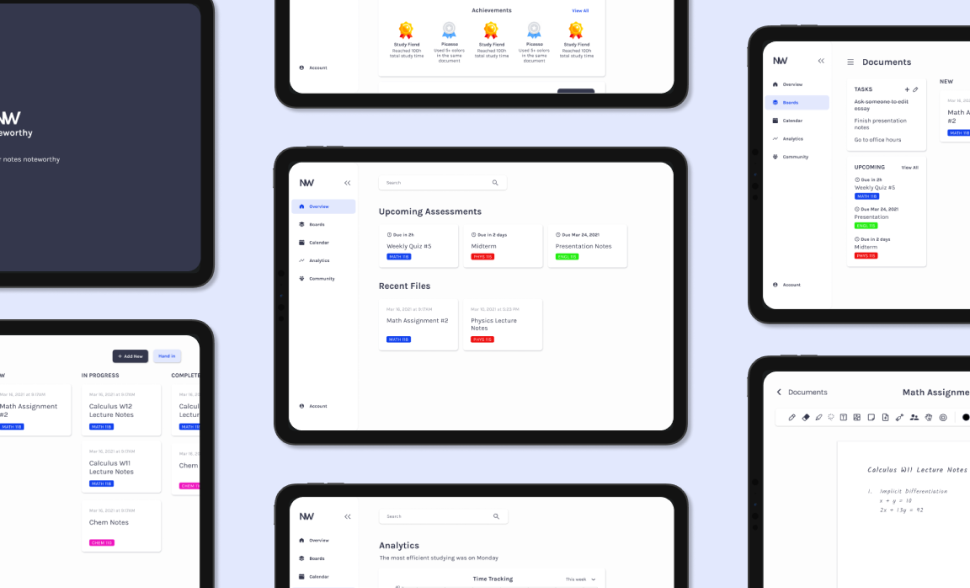
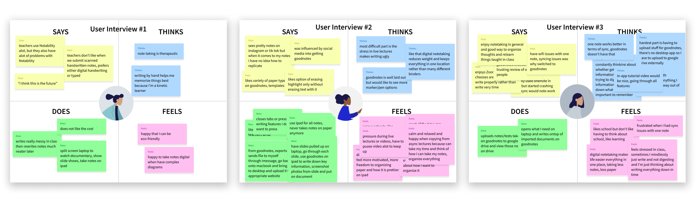
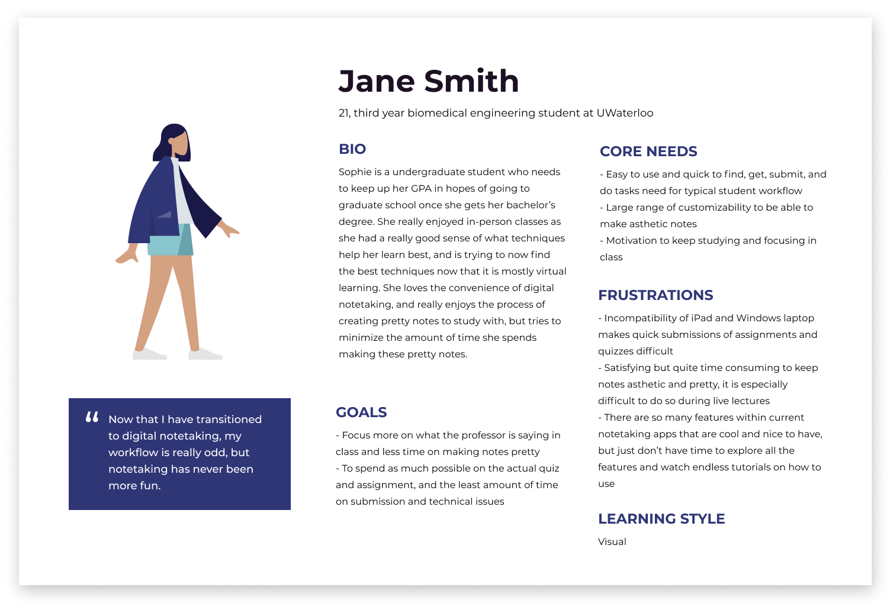
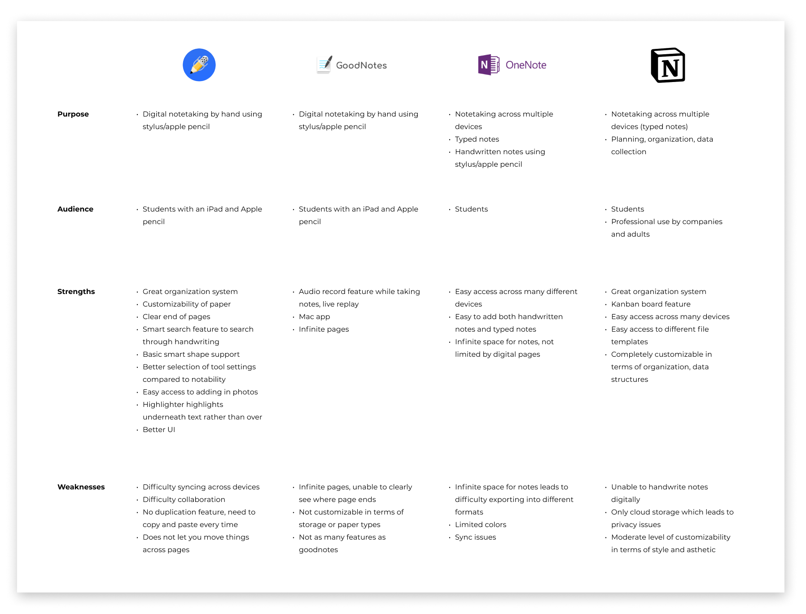
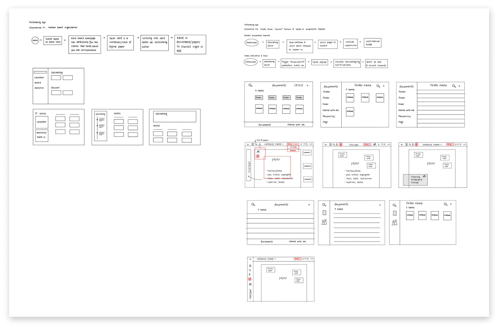
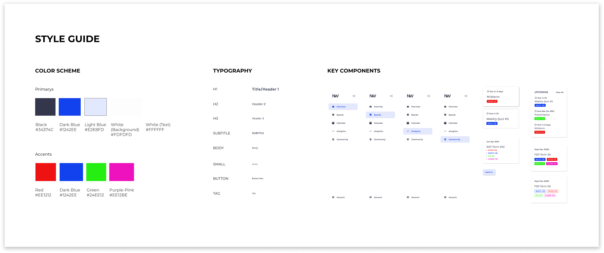

Noteworthy Notetaking
Notetaking app designed to boost productivity for university students

Overview
As part of the interview process for a company I applied to in late 2020, I was assigned a take home design challenge. While I decided not to move forward in their hiring process and not to partake in this design challenge, I was still intrigued by the topic of the challenge, and later on decided to tackle this challenge on my own time.
Project Details
TEAM: Solo
TIMELINE: ~7 days in March 2021
METHODS: User research, sketching, wireframes, prototyping (lo/hi-fi)

The process
Understanding the problem
User Research
To uncover the struggles university students face in digital notetaking and learn more about different notetaking experiences, I conducted three user interviews with university students from different programs, who have centered their school workflow around their use of digital notetaking apps.
An empathy map was created for each user interview conducted, using the gatherings and key insights gained.

The key insights found from talking with these students include
- With the new online remote learning, the digital submission process of tests and assignments completed in digital notetaking apps can be quite a hassle
- Keeping notes organized and neat can take up a lot of time, but is enjoyable
- Students have trouble staying motivated to do schoolwork
After consolidating such findings, a user persona was created to help inform design decisions and summarize expectations, user concerns, and motivations.

Competitive Analysis
To further my understanding of the digital notetaking space, I took a deeper look into several notetaking apps that already exist. This research and analysis allowed me to gain strategic insight into the features and flows of the existing design solutions on the market, to help better design my solution.

Ideation
Solution Exploration & Sketches
After gaining a deep understanding of the problem I wanted to design for, I began generating ideas to tackle the main problem I was aiming to solve, and solidfied the features and user flows that I would focus on during the design challenge.
I decided to move forward with the first exploration because the customizable and guided structure ability to sort notes would help simplify the workflow of online schooling. During interviews, people said that organization of notes is a top priority but time conusming, and this Kanban board structure of organizing notes freely based on the structure of UWaterloo courses, will help boost productivity. This option also still allows the room to be able to move forwards with the built-in submission feature, which will further improve the struggles of the virtual student notetaking workflow.

Lo-fi Wireframes & Iterations
To keep this design challenge as realistic and true to the fast paced nature as possible, I wanted to keep my time restricted and move through the challenge efficiently. Since I found that I already had a very good sense of the solution I wanted to move forwards with and how it would look based on the sketches I drew, I decided that I was comfortable enough to jump into creating the visual design system and then moving onto building out hi-fidelity designs.
Visual Design
Design System
After some thought, I decided that I wanted the app to feel modern, sleek, and be quite minimalistic. Not only will keeping it minimalistic help users by encouraging focus, it has also become quite trendy and desired among students. To fit this theme, I chose a light color palette with mainly white, light grey, and a soft black, with small bursts of colorful accent colors.

Reflection
Key Learnings
Overall I had alot of fun creating Noteworthy! I learned alot from this design challenge, with some noteworthy learnings including
- As there already exist very popular digital notetaking app solutions, I learned alot about staying focused on ways to further enhance the notetaking experience based on struggles people currently face, rather than just re-designing the same functionality of digital notetaking but with a different asthetic
- Being able to detach from personal biases while still factoring some of my own personal experiences as a digital notetaker myself
Next Steps
Although this was a design challenge that was meant to be completed in a short time span, if I were to move forwards I would continue by
- Performing usability testing to iterate and improve on this design
- Continue refining and building out features, such as the “hand in” feature and tasks list management